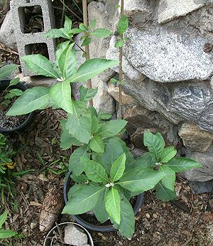

Bitter Leaf

[Tree vernonia, Bitter-tea Vernonia, Iron Weed (not unique); Eto Ewuro
(Yoruba); Etidot (Ibibio); Onugbu, Onugbo (Igbo); Ityuna (Tiv);
Oriwo (Edo); Chusar-doki, Shuwaka (Hausa); Mululuza, Muburiz (Luganda);
Labwori (Acholi); Fatefata (Nigeria); Orugbu
(Urobos, Itesekiris)," Etidot (Cross River); Nje nyani, An-gbentho
(Sierra Leone); Aluma, Gbondutsi (Togo); Bantara bururé,
Dakuna, Kossa fina (Guinea); Awonwono (Ghana); Ndoleh, Ying (Cameroon);
Grawa (Amharic, Tigrign); Ebichaa
(Ethiopia); Mujonso, Mtukutu (Swhaili); Omubillzi (Tanzania); Umubillzi
(Rwanda); Olusia (Luo); Mudalha Kikuyu (Kikuyu); Omulusia (Luhya);
Omubirizi, Mululuza (Uganda);
Dembezeko, Musikavakadzi, Muzhozho, Nyareru (Shona); Inyathelo
(Ndebele); Rivierbloutee (Afrikaans);
Vernonia amygdalina syn. Gymnanthemum amygdalinum also
V. colorata, V. calvoana, probably others]
These large shrubs or small trees are native to Tropical Africa but are
also widespread in West Africa and as far south as Angola and Mozambique.
There are about 1000 species of Veronia native to Africa, North
and South America and Asia but only in Sub-Saharan Africa are they used
as a green leafy vegetable. The species listed above are the main ones,
with V. amygdalina dominating, and the nearly identical
V. colorata in higher, drier environments. The leaves are
particularly used in Nigeria and Zimbabwe in soups, including Bitter
Leaf Soup, and stews. They are best used fresh, but dried are also used.
The photo is of my own plant, two months from when it was about 10 inches
high. This is a fast growing plant. This one consists of two shoots from
a rooted cutting.
Bitter Leaf, and other species in the Veronia genus are highly
medicinal, particularly against parasites, and are used throughout
their range. They are currently under intensive research to
scientifically verify their medicinal uses.
More on Daisy Herbs & Flowers
Buying:
In North America Bitter Leaf is available
dried, mainly on-line from African specialty sources, but is costly.
Fresh leaves are becoming available in California and Florida, but
still at very high prices.
Growing:
Plants are easily available on the Internet
to grow your own fresh leaves. This is a very fast growing plant, and
will tolerate growing an a container, if it is large enough. The photo
specimen, from a cutting, grew very fast, straight and high. It was
knocked over by high winds to about 45 degrees. This is fine - in Africa
they often plant them at an angle to encourage side branches. in the
photo you see side branches with the two main stems in the background.
Harvesting:
Once your plant has branched out, it is
best to cut the ends of shoots rather than picking individual leaves.
This causes the plant to produce more branches with lots of leaves.
In East Africa shoots are cut during the wet season when they can
regenerate, and leaves are picked during the dry season.
Prep:
Their Bitterness is caused by anti-nutrient
phytochemicals, which is the reason for extensive preparation before
using in recipes. Leaves are always washed and wrung out in several
changes of water to reduce this bitterness to the extent desired.
- Bitterleaf Soup: Freshly picked leaves are laid out in
the sun until well wilted to toughen them. The leaves are then washed
by massaging in changes of water to remove bitterness. They need
to be added early in the cooking.
- Egusi Soup: (and others) Freshly picked leaves
are washed immediately by massaging in changes of water to remove
bitterness. They remain tender, so are added towards the end of
cooking.
- Dried Bitterleaf: These will have been washed before
drying. This rehydration procedure is based on that of Nigerian
Flo Madubike, but substitutes Baking Soda (a proven substitute) for
Edible Potash, which is not commonly available in American kitchens.
- Wet the dry Bitter Leaves.
- Drain the Leaves and sprinkle lightly with Baking Soda, tossing
to get even distribution.
- Pack the Leaves medium tight in a very strong plastic bag and tie
it firmly so it is air tight.
- Place the bag in a deep pot and fill the pot half way with water.
- Cover the pot and bring the water to a boil. Hold at a low boil
for 30 minutes, adding more water if needed.
- Wash and massage the leaves in changes of cold water until the
water runs clear and the Baking Soda is completely washed away.
- The leaves are now recipe ready.
dy_bitrlfz 180619 - www.clovegarden.com
©Andrew Grygus - agryg@clovegaden.com - Photos on this
page not otherwise credited are © cg1 -
Linking to and non-commercial use of this page permitted